Part A: The Power of Diffusion Models!
In the first part of this project, I explored the capabilities of diffusion models, specifically using the DeepFloyd IF model.
Diffusion models work by reversing a process that gradually adds noise to an image. My goal was to implement this "denoising"
process manually, starting from simple loops and advancing to complex tasks like inpainting, optical illusions, and hybrid images.
0. Text-to-Image Generation
I began by getting familiar with the DeepFloyd IF diffusion model. This model is a two-stage text-to-image system,
but for this project, I focused on Stage 1, which generates 64x64 images. I experimented with different text prompts
and the number of inference steps to see how the model turns text embeddings into visual content. Even with a pre-trained model,
the quality varies significantly based on the random seed and the number of steps used.
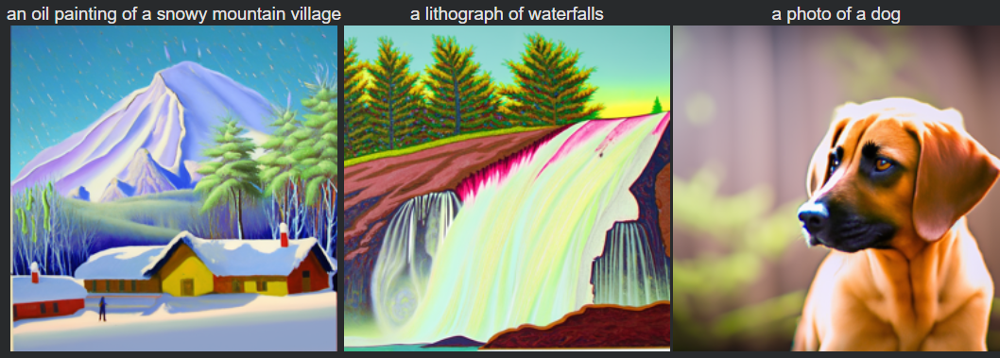
Generated Images at 20 Inference Steps
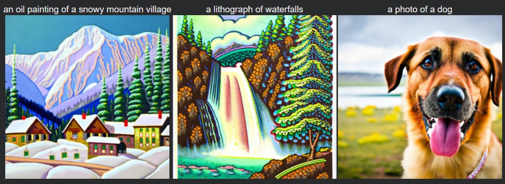
Generated Images at 50 Inference Steps
1. The Forward Process
I first implemented the "forward process." To demonstrate this process, I took an image of the Berkeley Campanile
and progressively adds Gaussian noise to it at different timesteps ($t$).
As $t$ increases, the original image structure is gradually lost.
I implemented the equation
$$x_t = \sqrt{\overline{\alpha}_t}\,x_0 + \sqrt{1-\overline{\alpha}_t}\,\epsilon$$
to simulate this noisy progression.
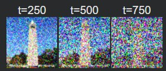
The Campanile at noise levels t=250, t=500, and t=750.
2. Classical Denoising
Before using neural networks, I tried to remove the noise using classical Gaussian blurring.
The logic was that blurring might smooth out the high-frequency Gaussian noise I added.
However, as shown below, this method performs poorly. While it removes some grain, it fails to recover edges
or details, especially at higher noise levels ($t=750$). This demonstrates why we need learned models for this task.
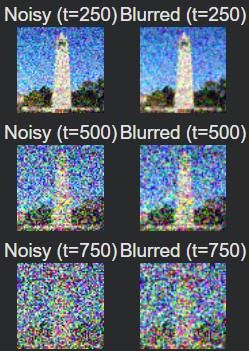
Attempting to denoise using Gaussian Blur at t=250, 500, 750.
3. One-Step Denoising
Next, I used the pre-trained DeepFloyd UNet to perform "one-step denoising." The UNet is trained to estimate the noise
present in an image given the timestep $t$ and a text embedding. By predicting the noise and subtracting it from the noisy image,
I obtained an estimate of the original image $x_0$. This works significantly better than Gaussian blurring,
but it still struggles at high noise levels ($t=750$) because projecting pure noise back to a sharp image in a single step is incredibly difficult.
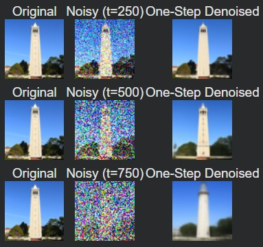
One-step denoising using the UNet at t=250, 500, 750.
4. Iterative Denoising
Diffusion models are designed to be iterative. Instead of trying to recover the image in one shot,
I implemented a sampling loop that removes a small amount of noise at a time. I used a "strided" schedule,
skipping steps to make the process faster (e.g., jumping 30 steps at a time). This iterative approach allows the model
to gradually hallucinate details and correct errors, resulting in a much sharper and more realistic final image compared
to the one-step method.
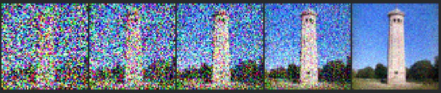
Progression of iterative denoising (every 5th step shown).
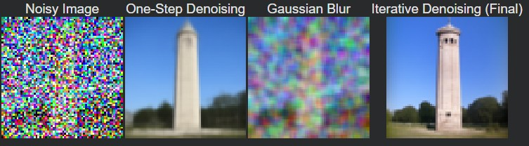
Comparison: Original vs. Iteratively Denoised vs. One-Step vs. Gaussian Blur.
5. Sampling from Pure Noise
Since I now had a working iterative denoising loop, I could use it to generate completely new images from scratch.
I started with pure Gaussian noise ($x_T$) and ran the loop all the way to $t=0$ using the prompt "a high quality photo."
While the results are recognizable, they are somewhat dull or nonsensical because the unconditional generation lacks strong guidance.
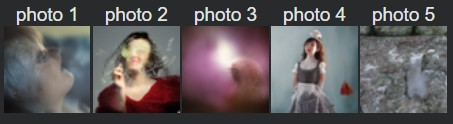
5 samples generated from pure noise using the standard denoising loop.
6. Classifier-Free Guidance (CFG)
To improve the quality of the generated images, I implemented Classifier-Free Guidance (CFG).
This technique computes two noise estimates: one conditioned on the text prompt ($\epsilon_c$) and one that is unconditional ($\epsilon_u$).
By extrapolating the difference between them ($\epsilon = \epsilon_u + \gamma(\epsilon_c - \epsilon_u)$) with a scale $\gamma > 1$,
the model is pushed strongly toward the prompt. As seen below, the images are much higher quality and more visually coherent.
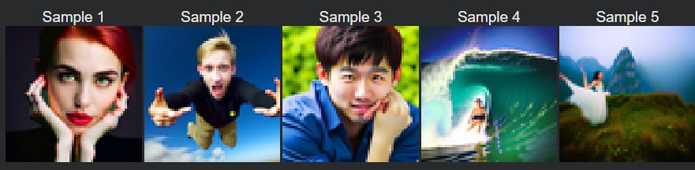
5 samples generated using Classifier-Free Guidance ($\gamma=7$).
7. Image-to-Image Translation
I applied classifier-free guidance to denoise both real images and hand-drawn images at different noise levels,
using a text prompt to guide the reconstruction. By starting the denoising process from different timesteps,
I could see how much structure from the original image was preserved versus how much was influenced by the
prompt.
7.1 Editing Hand-Drawn and Web Images
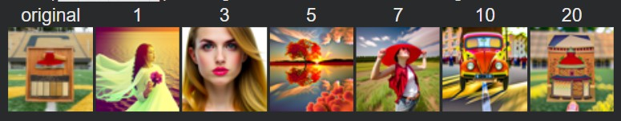
The Berkeley Axe at noise levels [1, 3, 5, 7, 10, 20].
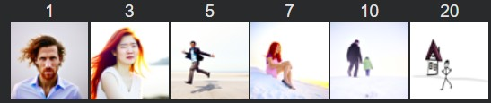
Hand drawn person and house at various noise levels.
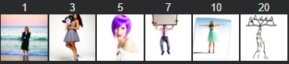
Hand drawn river and mountains at various noise levels.
7.2 Inpainting
I implemented inpainting to selectively edit parts of an image. I used a binary mask where 0 represents the area to keep
and 1 represents the area to generate. During the denoising loop, I forced the pixels outside the mask
to match the original image (plus appropriate noise), while allowing the pixels inside the mask to be generated by the model.
I used this to restore the top of the Campanile.
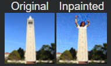
Original and Inpainted Campanile.
7.3 Text-Conditional Image-to-Image Translation
Finally, I combined SDEdit with specific text prompts. By guiding the denoising process with a prompt like "a rocket ship,"
I could transform the Campanile into a rocket while maintaining its general vertical shape. This shows how we can control the
projection onto the image manifold using language.
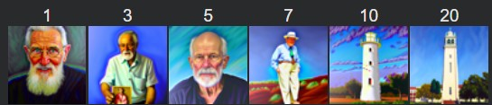
An oil painting of an old man transformed to a Campanile at varying timesteps.
 A rocket ship transformed to the Berkeley axe at varying timesteps.
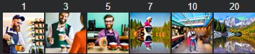
A photo of a hipster barista transformed to a photo of Colorado at varying timesteps.
A rocket ship transformed to the Berkeley axe at varying timesteps.
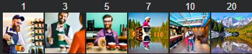
A photo of a hipster barista transformed to a photo of Colorado at varying timesteps.
8. Visual Anagrams
I created optical illusions called "Visual Anagrams." These are images that look like one thing when upright
and something else when flipped upside down. I achieved this by modifying the denoising step: I averaged the noise estimate
for prompt A (upright) and the flipped noise estimate for prompt B (flipped). This forces the image to satisfy both prompts simultaneously.
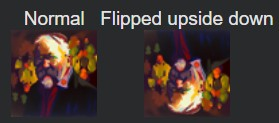
"An oil painting of an old man" vs. "An oil painting of people around a campfire".
 "A lithograph of waterfalls" vs. "A lithograph of a skull".
"A lithograph of waterfalls" vs. "A lithograph of a skull".
9. Hybrid Images
Similar to Project 2, I created Hybrid Images using Factorized Diffusion. I combined the low-frequency noise estimate
of one prompt with the high-frequency noise estimate of another prompt. The result is an image that appears to be one thing
from a distance and another from up close.
Rocket pencil.
Hybrid Image: A snowy mountain village along the Amalfi Coast.
Part B: Flow Matching from Scratch
In this part, I trained diffusion-style generative models from scratch on MNIST. I first built and trained a single-step
denoising UNet, then extended it with time conditioning to enable iterative generation using flow matching. Finally, I added
class conditioning and classifier-free guidance to improve sample quality and controllability.
1.1 Implementing the UNet
I implemented an unconditional UNet consisting of symmetric downsampling and upsampling paths with skip connections. This
architecture serves as the backbone for all denoising and flow-matching experiments in the rest of Part B.
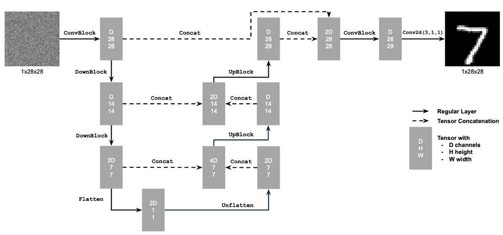
Architecture of the unconditional UNet used for single-step denoising and flow matching.
1.2 Visualizing the Noising Process
Before training, I visualized the forward noising process by progressively adding Gaussian noise to the Campanile image. As the
noise level increases, the Campanile gradually degrades and eventually becomes unrecognizable.
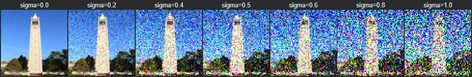
Forward noising process on the Campanile for increasing noise levels.
1.2.1 Training a Single-Step Denoiser
I trained the UNet as a single-step denoiser using an MSE loss, where noise is added on-the-fly during training. This
encourages the model to generalize across different noise realizations. After 5 training epochs the generated
samples looked mostly the same, maybe a bit sharper than the ones after 1 epoch.
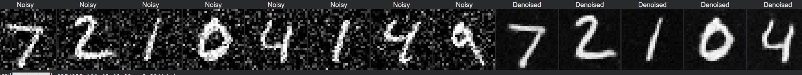
Denoising results on the test set after 1 training epoch (noise level σ = 0.5).
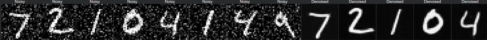
Denoising results on the test set after 5 training epochs (noise level σ = 0.5).
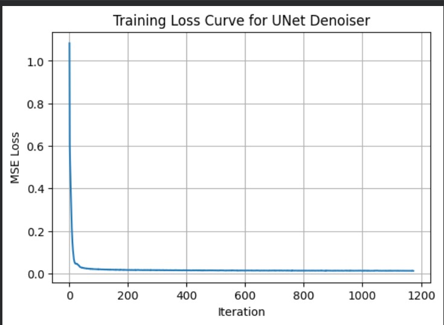
Training loss curve for the single-step denoiser.
1.2.2 Out-of-Distribution Noise Levels
I evaluated the trained denoiser on noise levels it was not trained on. Performance degrades smoothly as the noise level moves
farther from the training distribution.
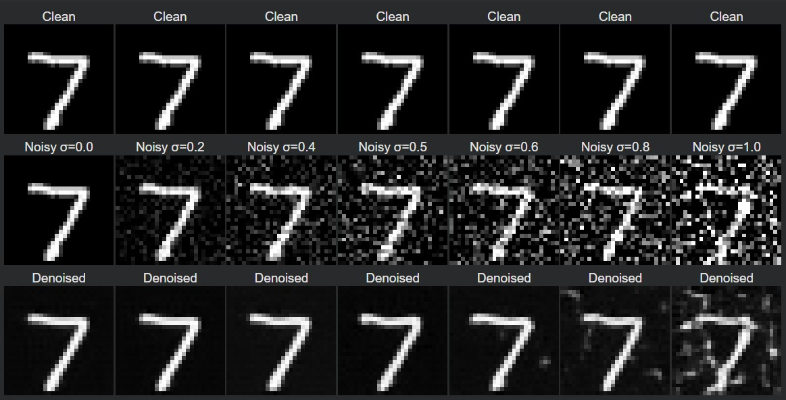
Denoising results on the same test image under out-of-distribution noise levels.
1.2.3 Denoising Pure Noise
I retrained the denoiser to map pure Gaussian noise directly to MNIST digits. Because the model is trained with an MSE loss, the
outputs tend to resemble averaged digit prototypes rather than separate digits.
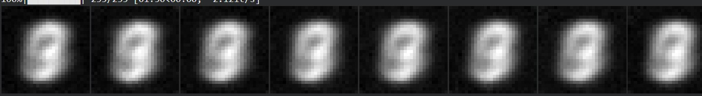
Samples generated from pure noise after 1 epoch of training.
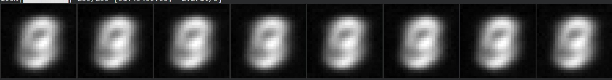
Samples generated from pure noise after 5 epochs of training.
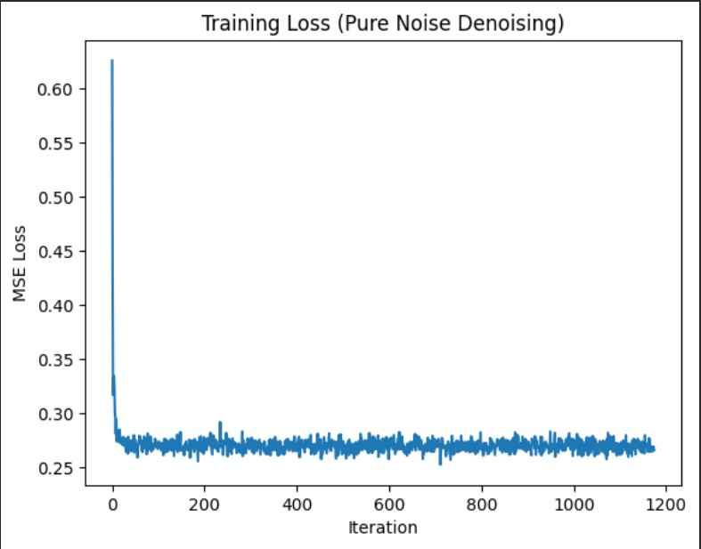
Training loss curve when denoising pure Gaussian noise.
2.1 Adding Time Conditioning
To enable iterative generation, I extended the UNet to accept a continuous time variable. Time embeddings are injected into
intermediate layers using fully connected blocks, allowing the model to adapt its predictions based on the current timestep.
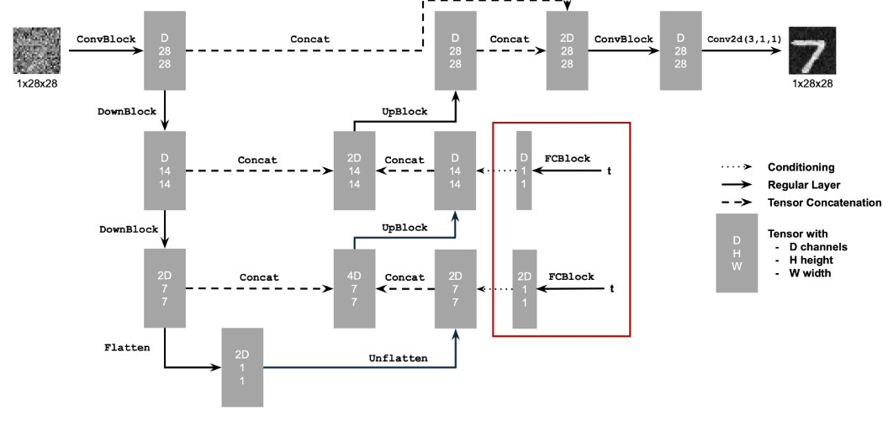
Time-conditioned UNet architecture with scalar timestep embeddings.
2.2 Training a Flow Matching Model
I trained the time-conditioned UNet using the flow matching objective, where the model learns to predict the flow between noisy
and clean images at arbitrary timesteps.
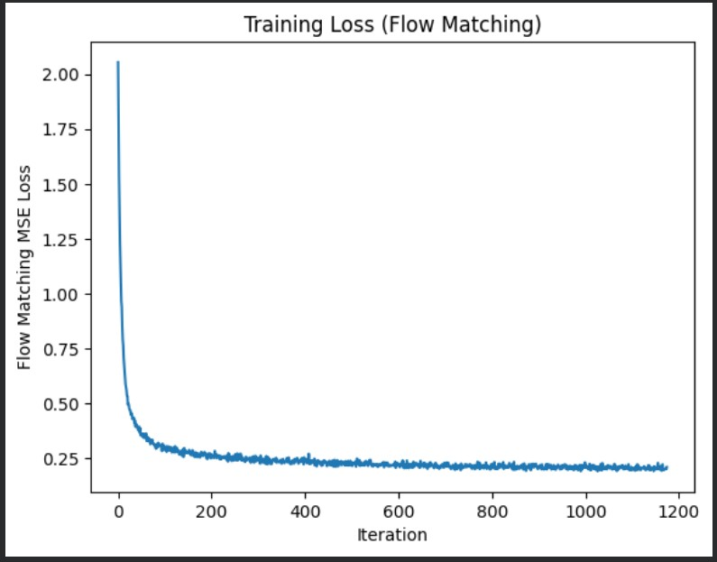
Training loss curve for the time-conditioned flow matching model.
2.3 Sampling with Flow Matching
Using the trained model, I generated samples by iteratively integrating the learned flow field from pure noise toward clean
images. Most of the generated samples from epoch 1 don't look like numbers, but by epoch 10 I can quite confidently
tell what each digit is.
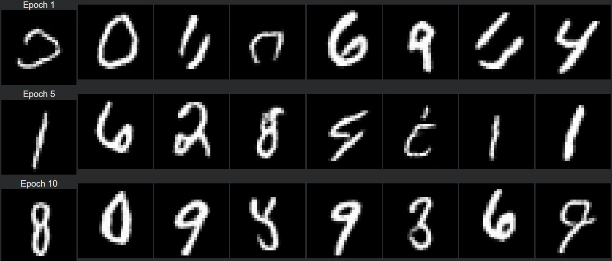
Samples generated using iterative flow matching after training.
2.4 Adding Class Conditioning
I further extended the UNet to condition on digit class labels using one-hot embeddings. Class conditioning is combined with time
conditioning and classifier-free dropout.
2.5 Training the Class-Conditional UNet
The class-conditioned UNet was trained using the same flow matching objective, with periodic unconditional training to support
classifier-free guidance.
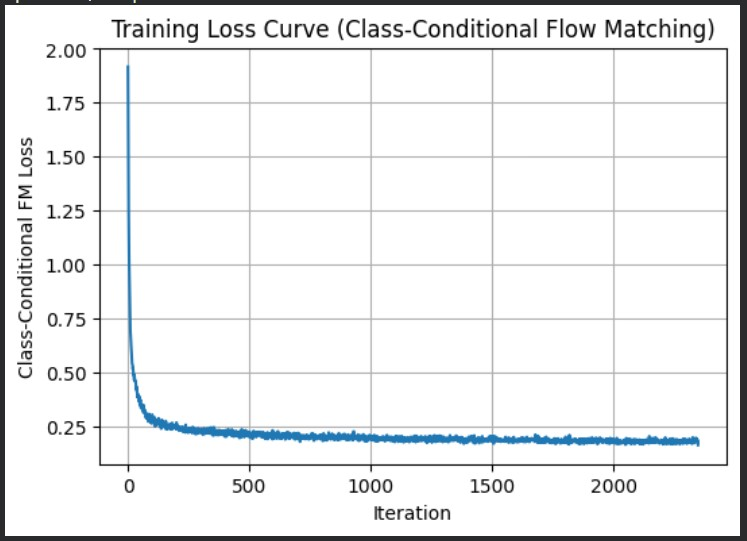
Training loss curve for the class-conditioned flow matching model.
2.6 Class-Conditional Sampling with CFG
Finally, I sampled images using classifier-free guidance with a guidance scale of 5.0. Conditioning on digit labels
significantly improves convergence speed and sample quality.
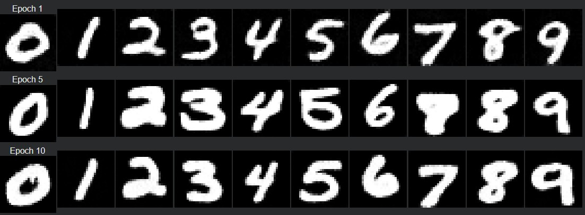
Class-conditional samples generated using classifier-free guidance (γ = 5.0).